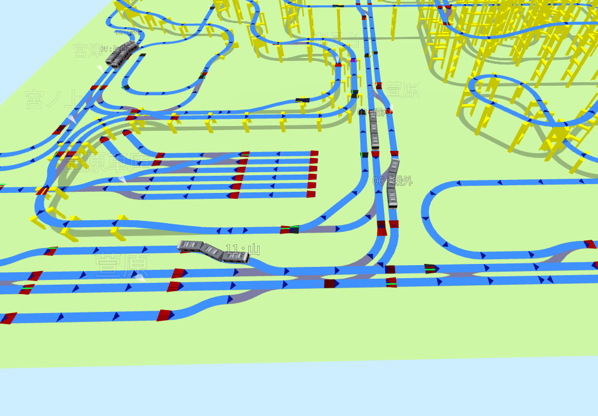
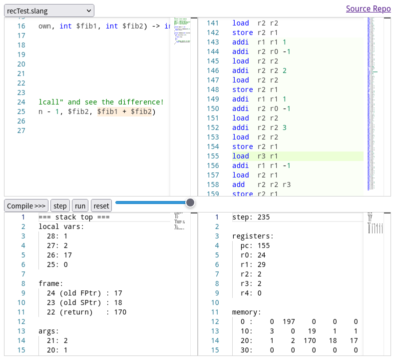
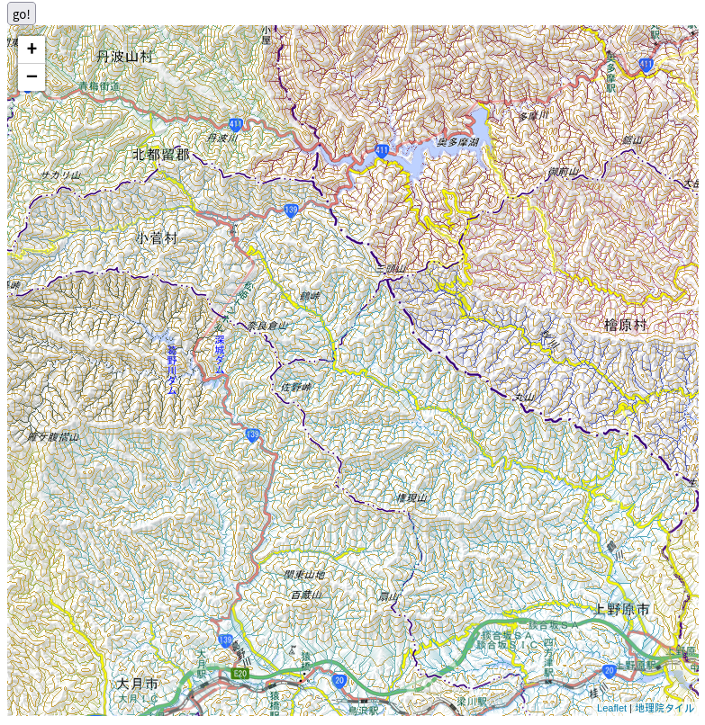
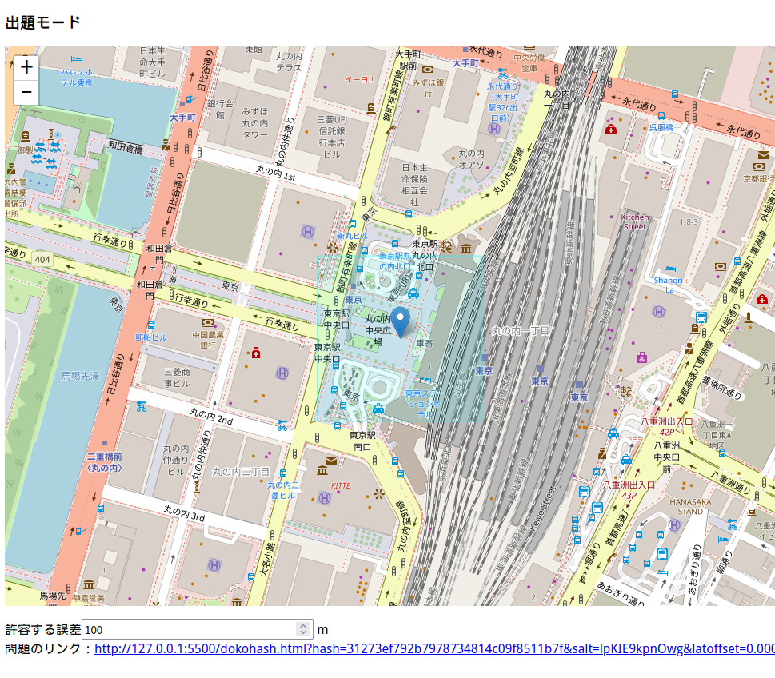
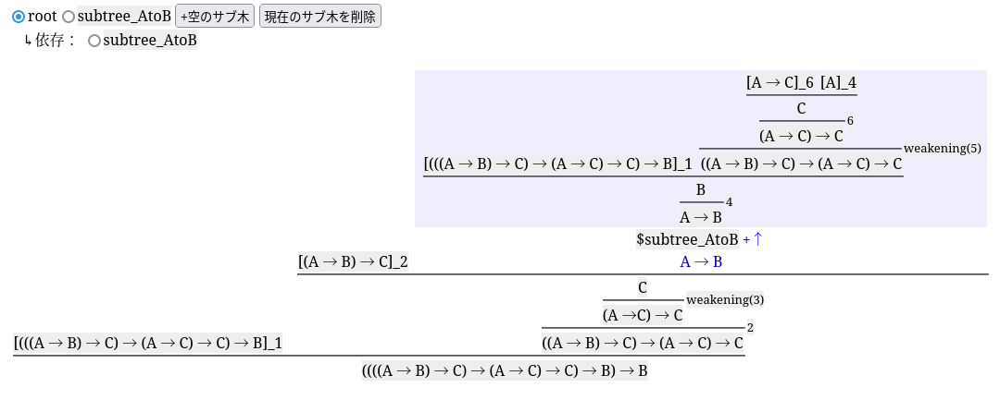
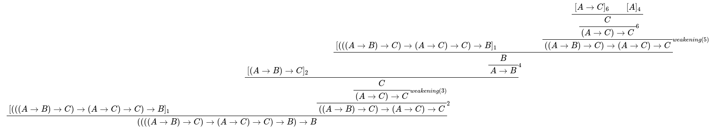
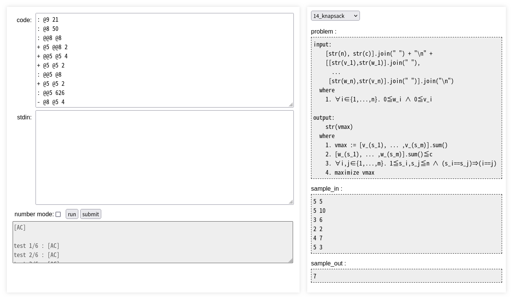
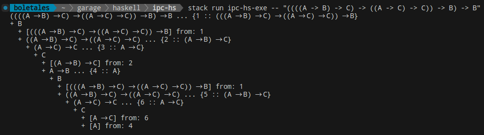

boletales.dev
自己紹介
- GitHub: https://github.com/boletales
- 趣味でコードを書いています
- 山道と関数型プログラミングがすき
- だいすき ：Haskell, purescript
- たくさんかいた ：JS
- さわったことある：Rust, PHP, Java, C#, VB.net, Python, Kotlin, C
- 制作物（下記にないもの）：arduino製加速度計・androidアプリ・Minecraftのmod
つくったもの
某社の鉄道玩具がオンラインで遊べる プラ線路シミュレーター
- 幼稚園児の永遠の夢！後片付けのいらない世界で好き勝手線路を敷こう！
- マルチプレイ対応！おともだちとの建設計画の不一致に苦しもう！
- 自動列車停止装置（ATS-P）もどき搭載でなめらかな自動運転！
- 「列車タグ」機能で複数路線も快速運転も自由自在！
- ただし連動装置（ポイントの切り替えをロックする機構）は実装していないため、まれによく大惨事が起こる
- プラレールで現実の路線を表現してダイヤ通りに運転するサークル「天通団」の動画に触発されたが、部屋にレールを置くスペースはなかったのでスクリプトを書いた
- 列車やレールの管理はpurescriptで、操作や描画は素JSで実装した
- 車両の3DモデルだけはBlenderを使ってまじめに作ったが、線路その他のポリゴンはコード直書きで生成している
- repo: https://github.com/boletales/prail-simulator
- 技術要素：
- 描画：JS (Three.js)
- 内部の処理：PureScript
- サーバー側コード：node (Express.js + Socket.IO)
- オンライン版実行環境：fly.io
ブラウザで動く！学習用コンパイラ usocomp
- CASL風のアセンブリを吐く手続き型言語のコンパイラ
- 構造体・関数ポインタまで実装できた（開発が進むにつれ仕様がC言語に似てくるのはなぜ？）
- ゆくゆくはその手続き型言語を吐く関数型言語のコンパイラも開発したい
- GHC 9.10 で Wasm Backend の JavaScript FFI が使えるようになったのでブラウザに移植した
- repo: https://github.com/boletales/usocomp
- 技術要素：
- 本体：Haskell
- Wasm版ブラウザ側：JS (browser_wasi_shim + monaco-editor)
分水嶺が見える地図 suikei-rs
- 自転車で山へ行くのが趣味なので、峠の正確な位置を知りたかった
- 降った雨の行く先を色分けして表示できる
- repo: https://github.com/boletales/suikei-rs
- 技術要素：
- 本体：Rust (rocket)
- ブラウザ側：JS (leaflet)
- 利用データ：国土地理院 地理院タイル（地図・標高）
- 実行環境：fly.io
場所を明かさずに場所当てを出題 dokohash
- URLを見ても答えのわからない場所当て答え合わせツール
- 地球上に200mグリッドを作り、入ったマスの名前をハッシュ化。ただし、指定地点がマスの中心に来るようオフセットする。
- 例題：「夜の底が白くなった。信号所に汽車が止まった。」
- 技術要素：
- 本体：JS (leaflet)
- 利用データ：OpenStreetMap
記号論理学の証明木を書くやつ インタラクティブ証明木エディタ

- キーボードで見たままの操作ができるエディタ
- LaTeX出力対応
- これ絶対記号論理学を履修する前に作るべきだったと思う
- だいたいpurescriptでつくってたはず
- repo: https://github.com/boletales/treeparser
- 技術要素：
- 描画：JS
- 内部の処理：PureScript（スタンドアロンで動作するライブラリだが、描画側にJSONだけ渡している）
記号でできた謎のアセンブリ minus-at0-at0-1
- 表題のリンクはコードテストと提出がオンラインでできるサイト
- 制作者の素性を伏せ、わずかなヒント以外ほとんど言語仕様に関する情報を与えずに友人たちにばらまいたところ、一人だけ本気で解いてくれて感動した
- リポジトリは解答例を書くためのアセンブリ生成器のものである
- 動的計画法まで出題するつもりだったので、ヒープとスタックを持ち関数を取り扱えてまともに手続き型プログラミングができるようになるDSLをpurescriptで書いた
- 制作期間のほとんどはアセンブリ生成器の実装に費やした
- repo: https://github.com/boletales/symasm_public
- 技術要素：
- 提出用サイト：JS（ほぼ中身なし。言語の仕様も明かしたくなかったのでインタプリタ等はサイト上にない）
- インタプリタ・採点サーバー：Google App ScriptのHTTP API
- アセンブラ自動生成器：PureScript
直観主義命題論理の自動証明器 ipc-hs
- Rustでおなじことをしていた友人に触発され、Haskellを使って速度で勝つことを目標に書いた
- 最終的に1000倍の速度差をつけて勝った
- パフォーマンスの改善に最も有効なのは、アルゴリズムの改善である（あたりまえ）
- SPECIALIZEプラグマとmtl-style最高！
- repo: https://github.com/boletales/ipc-hs
- 技術要素：
- 本体：Haskell